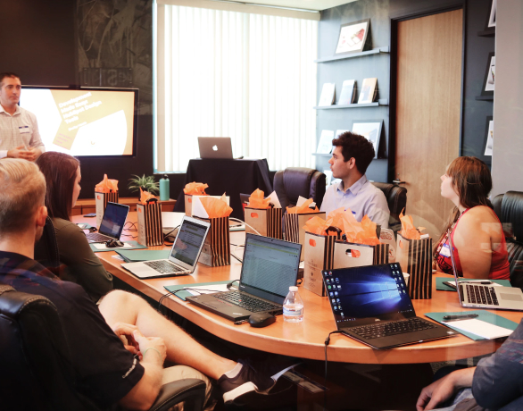
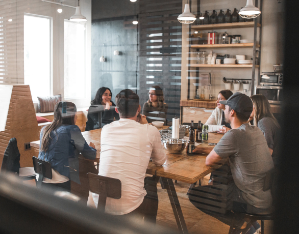
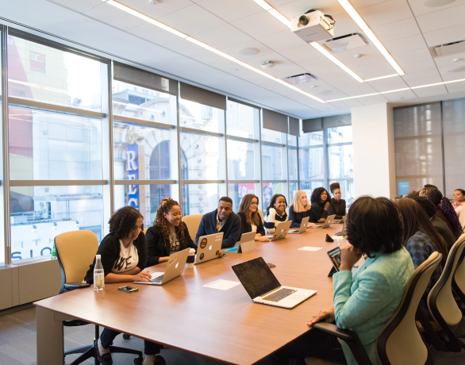

НАШі проєкти
ІНФОРМАЦІЙНІ КАМПАНІЇ ТА ІНШІ ЗАХОДИ
ПАТРІОТИЧНЕ ВИХОВАННЯ
СПРИЯННЯ СТВОРЕННЮ ІМІДЖУ ВЕТЕРАНА
Пілотний проект організації у громадах соціальної
і психологічної допомоги ветеранам
завдання
КУЛЬТУРНІ ТА ПРОСВІТНИЦЬКІ ПРОЕКТИ

популяризація культури
Популяризація культури взаємодії з ветеранською спільнотою у суспільстві що базується на принципах толерантності, взаємоповаги та чутливого ставлення.

тренінгові послуги
Консультативні, тренінгові послуги для роботодавців які прагнуть працювати з ветеранами та сервісних організацій які збираються, або вже надають послуги ветеранській спільноті.

зміна ставлення
Зміна ставлення до ветерана у суспільстві не через штучне формування іміджу ветерана, а через соціально відповідальну діяльність та залучення ветеранської спільноти до суспільно значущої діяльності.